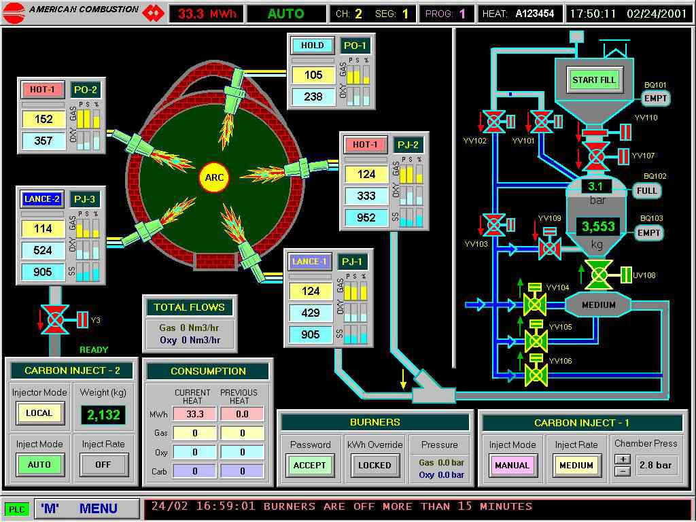

The control system provides operating control and allows to diagnose the system. The screens are easy-to-use and designed to provide information for safe operation, set points and system alarms. Supervisory personnel can review and modify the set points on secured screens.
PLC Control Programs
The programs that ACI can use to operate its EAF combustion technologies are as follows:
- Allen Bradley, SLC, PLC
- Siemens, S5, S7, and TI505
- Square D, Modicon, Concept
- GE, Series 6 and 7
Human Machine Interface (HMI) Programs
The programs that ACI can use to operate the HMI’s used to operate its EAF combustion technologies are as follows:
- Siemens, WinCC, and ProTool
- Allen Bradley, RSView, and Panelview
- Intouch (Wonderware)
- PanelMate
- Visual Basic
All status and alarm conditions are detected by the PLC and clearly displayed with a message on the monitor (i.e. low oxygen pressure). Any alarm must be acknowledged and corrected by the operator before the condition is cleared and operations are resumed.
The typical system interface allow definitions of up to 10 different burner modes (as holding, charging, low heat, high heat, soft lancing, hard lancing, etc.). On each mode, the supersonic oxygen gas flow and the post-combustion oxygen gas flow can be set-up independently
